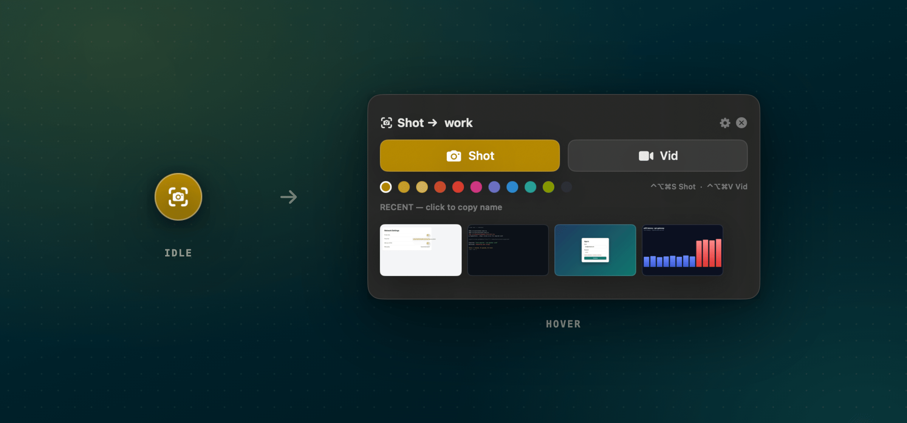
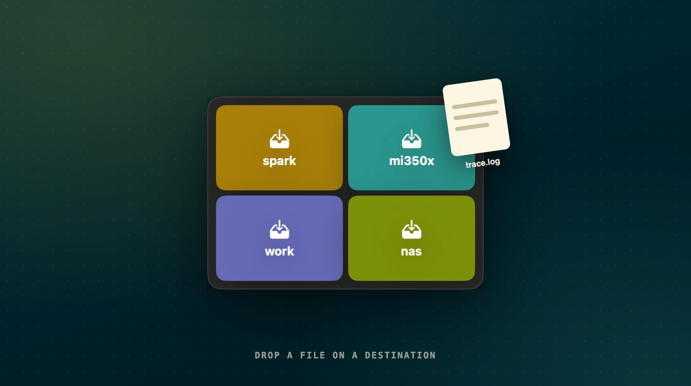
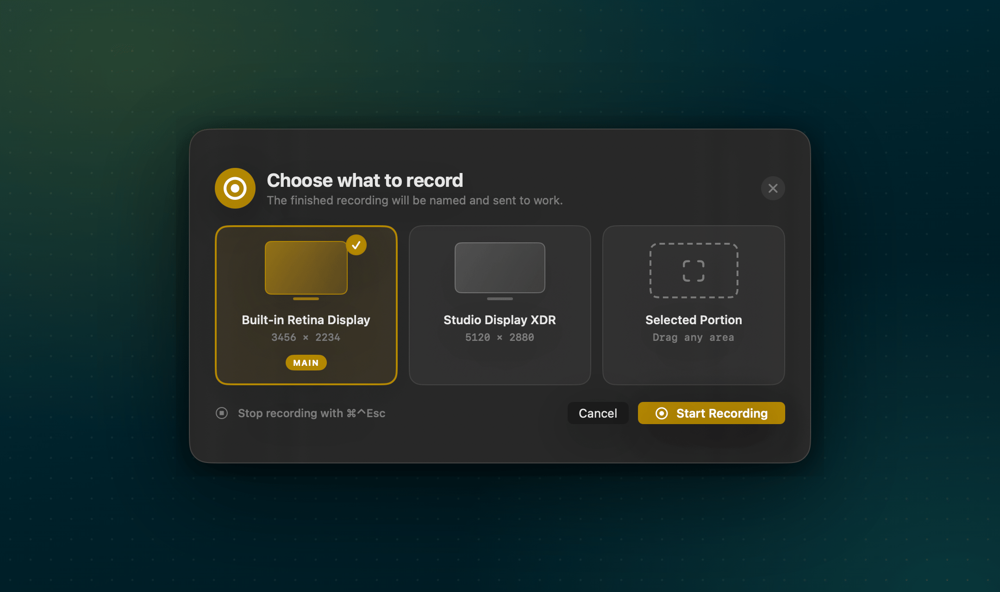
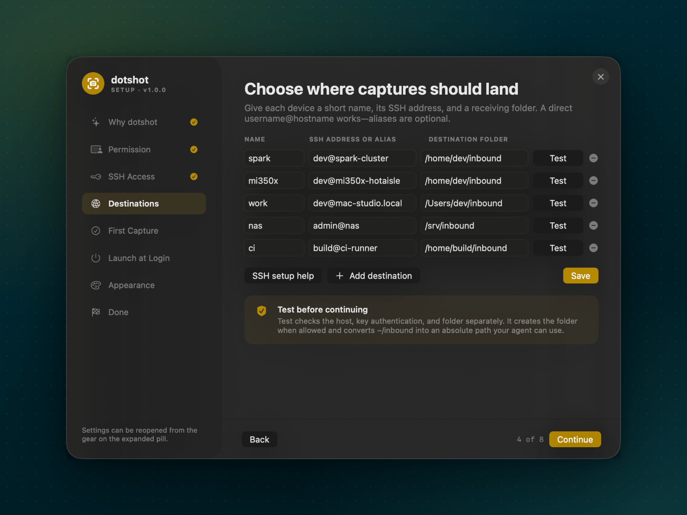
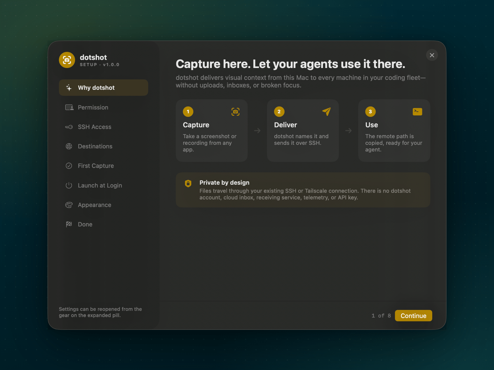
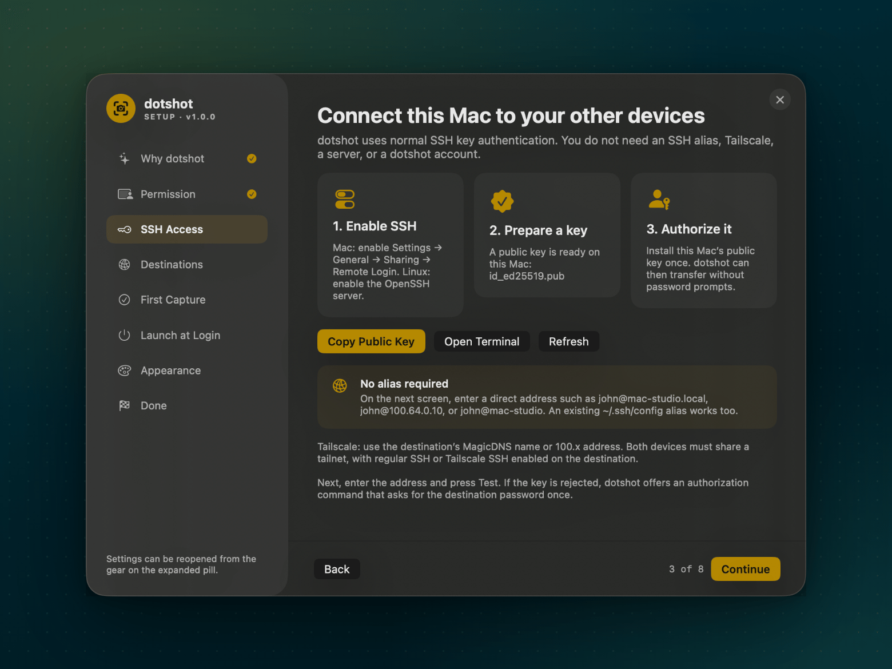

80-second intro · sound on
See the whole loop.
A training-loss spike to Claude on a DGX Spark cluster, a profiler table to Codex on an MI350X box in the hot aisle, a flaky-login recording to a Mac Studio, and eval results to the NAS.
How it works
The screenshot is usually on the wrong computer.
You code across a laptop, a desktop, build boxes, a GPU workstation. Your agent runs on one of them; your eyes are on another. dotshot turns what you see into a path the agent can read.
Capture
Press ⌃⌥⌘S and drag, or ⌃⌥⌘V to record. Offline OCR gives the file a useful name.
Deliver
dotshot copies it over your existing SSH or Tailscale connection with the system scp. A local copy stays in ~/Shots.
Use
The absolute remote path lands on your clipboard. Paste it into Claude Code, Codex, or any terminal agent.
Features
Small nub. Whole fleet.
dotshot idles as a 42px camera nub in the corner of your screen. Hover to reveal capture controls, destinations, accents, and recent captures.
Region shots, smart names
On-device Apple Vision OCR names files after what is on screen, like payment-form-test-failed-…png.
Recordings
Record a full display or a selected region, then send as-is, trim in QuickTime, or shrink to 720p.
Many destinations
Name each machine — work, gpu, nas — and switch from the pill. Drag any file onto the nub to send it.
Global shortcuts
⌃⌥⌘S for a screenshot, ⌃⌥⌘V for a recording. No Accessibility permission required.
Automation URLs
Trigger captures from Shortcuts, Raycast, BetterTouchTool, or scripts with dotshot:// links.
No cloud
No account, server, inbox, API key, or telemetry. Just your Mac, your keys, and your machines.




How it compares
Other tools do part of this.
Several good projects get a clipboard image to a remote agent, and some handle several hosts. If screenshots are all you need, one of them may suit you. dotshot adds recordings, any file, readable names, and a native app, and installs nothing on your machines.
| dotshot | Clipboard-upload tools | |
|---|---|---|
| Several machines | Named destinations, switch from the pill | Most support several hosts |
| Screen recordings | Display or region, trim or resize | Images |
| Any file | Drag onto the nub, drop on a machine | Clipboard or screenshot folder |
| File names | From on-screen text, offline | Timestamps |
| Setup | Tests host, key, and folder per machine | Install script or CLI config |
| Paste with Ctrl+V inside the agent | No, you paste a path | Some do (clipbridge) |
| Runs on the destination | Nothing, just scp | Varies: nothing, or a receiver (clipbridge) |
Worth a look: clipbridge, clipssh, clipport, and claude-screenshot-uploader.
Get set up in 5 minutes
From download to your first delivered path.
dotshot's guided setup walks through each of these steps. Here they are in advance, so you know what to expect. For every screen, see the full walkthrough.
-
Install dotshot
Download the latest
.dmgfrom GitHub Releases, open it, and drag dotshot into Applications. Requires macOS 14 Sonoma or newer.Releases are signed with a Developer ID and notarized by Apple, so dotshot opens like any other downloaded app. Checksums are in
SHA256SUMS.txton the release page. -
Allow Screen Recording
Click Request Permission in setup, then enable dotshot under Privacy & Security → Screen & System Audio Recording. Quit and reopen dotshot if the status doesn’t change.
-
Turn on SSH at the destination
- Mac: System Settings → General → Sharing → Remote Login.
- Linux: install and enable OpenSSH, e.g.
sudo apt install openssh-server.
-
Authorize this Mac’s key
No key yet? Create one on your Mac:
ssh-keygen -t ed25519Then install it on the destination once (it asks for that machine’s password this one time):
ssh-copy-id you@mac-studio.localSetup’s SSH Access step can copy both commands for you.
-
Add a destination and press Test
Give it a short name, an SSH address, and a folder:
work you@mac-studio.local ~/inboundTest checks the host, key, and folder separately, creates the folder, and turns
~/inboundinto an absolute path. Tailscale MagicDNS names,100.xaddresses, and~/.ssh/configaliases all work. -
Take your first capture
Press ⌃⌥⌘S, drag over part of the screen, and wait for Sent to work. The remote path is now on your clipboard.
-
Hand it to your agent
> Fix the overflow in /Users/you/inbound/network-settings-proxy-host-20260916-101400.pngIf a transfer fails, dotshot keeps the file in
~/Shotsand copies the local path instead.


Automation
Trigger captures from anything.
Open these URLs from Shortcuts, Raycast, BetterTouchTool, a Stream Deck, or open in a terminal. Leave out dest to use the destination selected in the pill.
| Action | URL |
|---|---|
| Screenshot to the current destination | dotshot://image |
| Screenshot to a named destination | dotshot://image?dest=work |
| Choose what to record | dotshot://video?dest=work |
| Record display 2 directly | dotshot://video?dest=work&screen=2 |
| Record a selected region | dotshot://video?dest=work&screen=region |
| Open destination settings | dotshot://settings |
open 'dotshot://image?dest=gpu'Privacy
Your screen stays between your machines.
dotshot can read the screen only after you approve it in macOS, and it sends files only to destinations you configure.
- No account, cloud inbox, or receiving service
- No analytics, telemetry, or automatic update pings
- Transfers use the system
ssh/scpand your existing keys - Never stores passwords or reads private keys
- Host-key checking stays on; password prompts are disabled
- Open source under the MIT License
FAQ
Questions
Do I need Tailscale?
No. Any address your Mac can reach over SSH works: user@host.local on your network, a public hostname, or an alias from ~/.ssh/config. With Tailscale, use the machine’s MagicDNS name or 100.x address; regular SSH and Tailscale SSH both work.
Can destinations run Linux?
Yes. Destinations only need an SSH server and a folder the account can write to. dotshot itself runs on macOS.
Which Macs are supported?
macOS 14 Sonoma or newer, on Apple silicon or Intel. The release is a universal app.
Does anything get installed on the destination?
No. dotshot copies files with scp into the folder you choose. There is no daemon, agent, or receiving service.
I used Shot Pill. Do I need to set things up again?
No. dotshot is Shot Pill’s new name. On first launch it imports your destinations and preferences and quits the old app. macOS will ask for Screen Recording permission again, and shotpill:// links become dotshot://. Remove the old app afterwards.
Where are captures and settings stored?
Captures and a log live in ~/Shots. Destinations live in ~/Library/Application Support/dotshot/destinations.tsv.
What if a transfer fails?
dotshot keeps the file in ~/Shots, copies the local path instead, and shows a notification. Details are in ~/Shots/.dotshot.log.